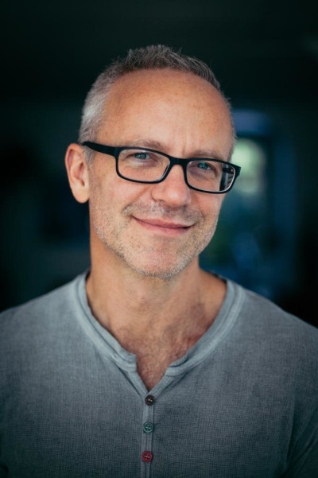

| Jan van Gemert | |
|
Contact Publications Research guidelines Research meetings MSc thesis |
Contact Dr. Jan van GemertHead of the Computer vision lab Faculty of Electrical Engineering, Mathematics and Computer Science Delft University of Technology Visit: 28.6.E340: Van Mourik Broekmanweg 6 (building 28), 6th floor (East) room 340. Post: TU Delft, INSY, 6th-floor Tav Jan van Gemert, Van Mourik Broekmanweg 6, 2628 XE Delft. Phone: (+31)(0)15 278 84 34 Email: J.C.vanGemert at-sign TUDelft dot nl Lab: Computer vision lab Media Youtube: Channel github: https://github.com/jvgemert Twitter: https://twitter.com/jan_gemert Research summary (in Dutch): YouTube video Organization Chairman of the ASCI scientific committee. Master coordinator of the artificial intelligence technology track (AIT) in the MSc program. Teaching the MSc Deep Learning course, the MSc Computer Vision by Deep Learning course, and the BSc Image Processing course. News (2025):
- Grant. Got 2 PHD students funded through the FIND NWO Perspectief grant doing reseach on AI foundation models.
- Organization. I'm a 'lead area chair' at CVPR 2025. News (2024):
- Keynote. At the International Conference on Pattern Recognition FBE 2024 workshop, titled "Deep House of Cards? Testing the fundaments in image and video AI" slides.
- Mentoring. I am a mentor at the Future Female+ Faculty mentorship program at TU Delft. - PhD committee. For the PhD defense of Zimin Xia. - Reviewer. for "IEEE Transactions on Pattern Analysis and Machine Intelligence" journal. - Reviewer. for "Neural Networks" journal. - PhD committee. For the PhD defense of Dr. Tom van Dijk. - Supervised PhD graduated. Wonderful that Dr. Ombretta Strafforello graduated. - Public science communication. "AI and Vision: A shallow dive into deep learning" at Harvest Imaging Forum. - Mentoring. I am a mentor at the speed mentoring event at the European Conference on Computer Vision (ECCV) 2024. - Accepted paper. European Conference on Computer Vision (ECCV), "MSD: A Benchmark Dataset for Floor Plan Generation of Building Complexes" [pdf, project]. - Accepted paper. European Conference on Computer Vision workshop (ECCVw), "Aligning Object Detector Bounding Boxes with Human Preference" [pdf]. - Accepted paper. European Conference on Computer Vision workshop (ECCVw), "Pushing Joint Image Denoising and Classification to the Edge" [pdf]. - Accepted paper. European Conference on Computer Vision workshop (ECCVw), "Pushing the boundaries of event subsampling in event-based video classification using CNNs" [pdf]. - Accepted paper. European Conference on Computer Vision workshop (ECCVw), "HAVANA: Hierarchical stochastic neighbor embedding for Accelerated Video ANnotAtions" [pdf]. - Supervised PhD graduated. Proud that Dr. Yunqiang Li graduated. - PhD committee. For the PhD defense of Dr. Sander Klomp. - Radio interview. On Radio Totaal Normaal, Kunstmatige intelligentie. - Supervised PhD graduated. Proud that Dr. Xin Liu graduated. - Research guidelines. I have consolidated all my separate research guidelines in a single document: Empirical understanding-based Research guidelines in Deep Learning. - Supervised PhD graduated. Proud that Dr. Attila Lengyel graduated. - Supervised PhD graduated. Proud that Dr. Ziqi Wang graduated. - Grant. Received a EU grant Biodiversa+: European Biodiversity Partnership. - Organization. I'm a senior area chair at ECCV 2024. - Organization. Started a new term as chairman of the ASCI scientific committee. - Accepted paper. International Conference on Computer Vision Theory and Applications (VISAPP), "End-to-end-chess-recognition" [pdf]. - Accepted paper. International Conference on Computer Vision Theory and Applications (VISAPP), "Scale Learning in Scale-Equivariant Convolutional networks" [pdf]. - PhD committee. For the PhD defense of Dr. Raffaele Imbriaco. - Organization. I'm a reviewer at CVPR 2024. News (2023):
- Grant. Received a Take-off grant for developing Video AI applications.
- Accepted paper. Neural Information Processing Systems (NeurIPS), "Color Equivariant Convolutional Networks" [pdf]. - Invited talk. "A shallow introduction to Deep Learning" at ASCI Winterschool on Deep Learning. - PhD committee. For the PhD defense of Dr. Rick Groenendijk. - Accepted paper. International Conference on Computer Vision (ICCV), "Objects do not disappear: Video object detection by single-frame object location anticipation" [pdf]. - Accepted paper. International Conference on Computer Vision (ICCV), "A step towards understanding why classification helps regression" [pdf]. - Accepted paper. International Conference on Computer Vision (ICCV), "Differentiable Transportation Pruning" [pdf]. - Accepted paper. International Conference on Computer Vision workshop (ICCVw), "Video BagNet: short temporal receptive fields increase robustness in long-term action recognition" [pdf]. - Accepted paper. International Conference on Computer Vision workshop (ICCVw), "Are current long-term video understanding datasets long-term?" [pdf]. - Accepted paper. International Conference on Computer Vision workshop (ICCVw), "Is there progress in activity progress prediction?" [pdf]. - Accepted paper. International Conference on Computer Vision workshop (ICCVw), "Using and abusing equivariance" [pdf]. - Accepted paper. International Conference on Computer Vision workshop (ICCVw), "Benchmarking Data Efficiency and Computational Efficiency of Temporal Action Localization Models" [pdf]. - Accepted paper. International Conference on Computer Vision workshop (ICCVw), "SSIG: A Visually-Guided Graph Edit Distance for Floor Plan Similarity" [pdf]. - Accepted paper. International Conference on Computer Vision workshop (ICCVw), "Non-Destructive Infield Quality Estimation of Strawberries Using Deep Architectures" [pdf]. - Invited talk. "Computer vision by deep learning" at Plantum. - Award.Best educator in the MSc award Computer Science MSc 2023. - Organization. I'm an area chair at BMVC 2023. - Accepted paper. Annals of Clinical and Translational Neurology, "Assessing facial weakness in myasthenia gravis with facial recognition software and deep learning" [pdf]. - Organization. The Netherlands Conference on Computer Vision NCCV 2023 - Organization. ICCV workshop of our 4th iteration of the Visual Inductive Priors for Data-Efficient Deep Learning: VIPriors. - Organization. ICCV workshop on Computer Vision Aided Architectural Design: CVAAD. - Accepted paper. International Conference on Learning Representations (ICLR), "Understanding weight-magnitude hyperparameters in training binary networks" [pdf]. - PhD committee. For the PhD defense of Dr. Boudewine Ossenkoppele. - Accepted paper. CVPR workshop L3D-IVU 2023, "What Affects Learned Equivariance in Deep Image Recognition Models?" [pdf]. - Accepted paper. Medical Imaging 2023, "Analyzing components of a transformer under different dataset scales in 3D prostate CT segmentation" [pdf]. - Accepted paper. Sensors 2023, "Towards single camera human 3D kinematics" [pdf]. - Organization. I'm an area chair at ICCV 2023. - Organization. I'm a reviewer at CVPR 2023. - Accepted paper. WACV 2023, "LAB: Learnable Activation Binarizer for Binary Neural Networks" [pdf]. News (2022):
- Accepted paper. ICLR 2022, "Flexconv: Continuous kernel convolutions with differentiable kernel sizes" [pdf].
- PhD committee. For the PhD defense of Dr. Sadaf Gulshad. - PhD committee. For the PhD defense of Dr. Markus Braun. - Award. British Machine Vision Confence (BMVC): Best student paper (Honorable mention). - Accepted paper. BMVC 2022, "NeRD++: Improved 3D-mirror symmetry learning from a single image" [pdf]. - Accepted paper. BMVC 2022, "Copy-Pasting Coherent Depth Regions Improves Contrastive Learning for Urban-Scene Segmentation" [pdf, Paper award]. - Mentoring. I am a senior faculty mentor at the speed mentoring event at the European Conference on Computer Vision (ECCV). - PhD committee. For the PhD defense of Dr. Dong Hang. - Invited talk. About "AI for image recognition" at Rijksdienst voor Ondernemend Nederland, in collaboration with ALLAI. - Organization. Workshop at the European Conference on Computer Vision (ECCV), the 3rd edition of VIPriors: Visual Inductive Priors for Data-Efficient Deep Learning. - Supervised PhD graduated. Exited that Dr. Amogh Gudi graduated. - Organization. I'm an area chair at BMVC 2022. - Accepted paper. ICIP 2022, "Humans disagree with the IoU for measuring object detector localization error" [pdf]. - Accepted paper. ICIP 2022, "Heart rate estimation in intense exercise videos" [pdf]. - Accepted paper. ICPR 2022, "AmsterTime: A Visual Place Recognition Benchmark Dataset for Severe Domain Shift" [pdf]. - Supervised PhD graduated. Happy that Dr. Yancong Lin graduated. - Organization. I'm an area chair at ECCV 2022. - Accepted paper. CVPR 2022, "Deep vanishing point detection: Geometric priors make dataset variations vanish" [pdf]. - Supervised PhD graduated. Proud that Dr. Osman Semih Kayhan graduated. - PhD committee. For the PhD defense of Dr. Juan Pedro Vigueras Guillen. - Accepted paper. AAAI 2022, "Equal Bits: Enforcing Equally Distributed Binary Network Weights" [pdf]. - Organization. I'm an area chair at CVPR 2022. News (2021):
- PhD committee. For the PhD defense of Dr. Javad Zolfaghari Bengar, CVC, Barcelona.
- Accepted paper. BMVC 2021, "Frequency learning for structured CNN filters with Gaussian fractional derivatives" [pdf]. - Award. Deep Learning for Geometric Computing 2021 workshop at ICCV: a best paper award. - Accepted paper. (oral) ICCV 2021, "Zero-Shot Day-Night Domain Adaptation With a Physics Prior" [pdf]. - Accepted paper. ICCV 2021, "Spectral Leakage and Rethinking the Kernel Size in CNNs" [pdf]. - Organization. Workshop at ICCV, the 2nd edition of VIPriors: Visual Inductive Priors for Data-Efficient Deep Learning. - Accepted paper. DLGC 2021, "Investigating transformers in the decomposition of polygonal shapes as point collections" [pdf]. - Accepted paper. IEEE Biomedical and Health Informatics 2021, "Assessment of Parkinson's Disease Severity from Videos using Deep Architecture" [pdf]. - Accepted paper. ICIP 2021, "PUNet: Temporal Action Proposal Generation With Positive Unlabeled Learning Using Key Frame Annotations" [pdf]. - Accepted paper. ICIP 2021, "The Arm-Swing Is Discriminative in Video Gait Recognition for Athlete Re-Identification" [pdf]. - Accepted paper. ICIP 2021, "Exploiting Learned Symmetries in Group Equivariant Convolutions" [pdf]. - Accepted paper. ICIP 2021, "Semi-supervised lane detection with Deep Hough Transform" [pdf]. - Accepted paper. ICIP 2021, "Hallucination In Object Detection -- A Study In Visual Part Verification" [pdf, DelftBikes data set]. - PhD committee. For the PhD defense of Dr. Shuo Li, TU Delft. - Accepted paper. ICML 2021, "Deep Continuous Networks" [pdf]. - Accepted paper. TIP 2021, "Resolution learning in deep convolutional networks using scale-space theory" [pdf]. - Accepted paper. AAAI 2021, "Deep Unsupervised Image Hashing by Maximizing Bit Entropy" [pdf]. - Organization. I'm an area chair at CVPR 2021. - Organization. I'm an area chair at BMVC 2021. - Organization. I'm appointed chairman of the ASCI scientific committee. - Accepted paper. CVPR 2021, "No frame left behind: Full Video Action Recognition" [pdf]. - Organization. I'm an area chair at ICCV 2021. News (2020):
- Paper reproduction repository. We launched an open website to submit, archive, and structure (partial) reproductions of machine learning papers: https://reproducedpapers.org/.
- Accepted paper. RRPR 2020, "ReproducedPapers.org: Openly teaching and structuring machine learning reproducibility" [pdf]. - Accepted paper. MDPI Applied Sciences journal 2020, "Real-time Webcam Heart-Rate and Variability Estimation with Clean Ground Truth for Evaluation" [pdf]. - Accepted paper. DL-HAU 2020, "t-EVA: Time-Efficient t-SNE Video Annotation" [pdf]. - Invited talk. About "Black Magic in Deep Learning" at Computer vision talks. - Organization. Workshop at ECCV, the first edition of VIPriors: Visual Inductive Priors for Data-Efficient Deep Learning. - PhD committee. Jury member in the committee of Dr. Li, Shuo. - Program committee. I'm reviewing for CVPR 2021. - Program committee. I'm reviewing for WACV 2020. - Accepted paper. ICPR 2020, "Respecting Domain Relations: Hypothesis Invariance for Domain Generalization" [pdf]. - Accepted paper. ICPR 2020, "WeightAlign: Normalizing Activations by Weight Alignment" [pdf]. - Accepted paper. ICPR 2020, "Zoom-CAM: Generating Fine-grained Pixel Annotations from Image Labels" [pdf, code]. - Accepted paper. ICPR 2020, "Tilting at windmills: Data augmentation for deep pose estimation does not help with occlusions" [pdf]. - Program committee. I'm reviewing for ICPR 2020. - Youtube. The TU-Delft Computer Vision lab now has its own Youtube channel. - Award. OpenEyes ECCV 2020 workshop: Received Best paper award. - Accepted paper. BMVC 2020, "Black Magic in Deep Learning: How Human Skill Impacts Network Training" [pdf]. - TV appearance. On Universiteit van Nederland, Hoe herkent een zelfrijdende auto een fietser?. - Accepted paper. ECCV 2020, "Deep Hough-Transform Line Priors" [pdf]. - Accepted paper. ECCVw 2020, "Efficiency in Real-time Webcam Gaze Tracking" [pdf]. - Accepted paper. IEEE Access 2020, "On Sensitive Minima in Margin-based Deep Distance Learning" [pdf]. - Award. CVPR 2020: Received Outstanding reviewer award. - Blog post. Current Convolutional Neural Networks are not translation equivariant. - Accepted paper. CVPR Deep Vision workshop 2020, "Top-Down Networks: A coarse-to-fine reimagination of CNNs" [pdf]. - Program committee. I'm reviewing for ECCV 2020. - Organization. Organizing an ECCV'20 workshop on Visual Inductive Priors for Data-Efficient Deep Learning. - Accepted paper. CVPR 2020, "On Translation Invariance in CNNs: Convolutional Layers can Exploit Absolute Spatial Location" [pdf]. - Organization. I'm an area chair at BMVC 2020. - Speaker. Gave an introduction to CNNs in the context of AllAI at the Dutch ministry of economic affairs. - Speaker. Guest lecture in the Erasmus Faector excellence program. - Newspaper article. In Dutch national newspaper on difficulty of video search on social media De volkskrant. News (2019):
- Program committee. I'm reviewing for CVPR 2020.
- Slides. on Where is the action? Analyzing 10 recent data sets in action recognition. - Slides. on How to do (deep learning) research? Tips, common pitfalls and guidelines. - Speaker. I will give a keynote presentation in London, at the British Machine Vision Association's Video understanding workshop. [slides] - Speaker. I will kick off the first Rotterdam deep learning meetup. - Speaker. I will speak at the Delft-Leiden Deep Learning practitioners on how to do (deep learning) research. [slides] - Accepted paper. BMVC 2019, "Push for Quantization: Deep Fisher Hashing" [pdf]. - Accepted paper. ICCV-W 2019, "The Instantaneous Accuracy: a Novel Metric for the Problem of Online Human Behavior Recognition in Untrimmed Videos" [pdf]. - Accepted paper. ICCV-W 2019, "Cross Domain Image Matching in Presence of Outliers" [pdf]. - Accepted paper. ICCV-W 2019, "Efficient Real-Time Camera Based Estimation of Heart Rate and Its Variability" [pdf]. - Accepted paper. ICCV-W 2019, "Attention-Aware Age-Agnostic Visual Place Recognition" [pdf]. - Program committee. I'm reviewing 8 papers for ICCV 2019. - Accepted paper. ACM MM-W 2019, "Running Event Visualization using Videos from Multiple Cameras" [pdf]. - Speaker. I will give a keynote presentation in Bonn, at the Anticipating Human Behavior workshop. [slides] - Grant. Obtained a prestigious NWO VIDI grant on 'Tabula Inscripta: adding prior knowledge to deep learning', researching visual inductive priors to improve deep network data efficiency. - Organization. I'm an area chair at BMVC 2019. - Accepted paper. CVPR-W 2019, "Deep Visual City Recognition Visualization" [pdf]. - Accepted paper. CVPR-W 2019, "ViDeNN: Deep Blind Video Denoising" [pdf, code]. - Organization. I've joined ASCI in the research committee. - Organization. I'm a track chair of ICT.OPEN 2019. - Organization. I'm organizing the Delft Deep Learning Colloquium 2019 with excellent speakers from industry and academia. - Course. Teaching a 2 day graduate course in June: Deep Learning Demystified. - Speaker. at the Computer Vision symposium of Thalia, study association of Nijmegen University. - Speaker. at the Delft AI meetup. - Newspaper article. In Dutch national newspaper discussing Deep learning for sports analysis, De volkskrant: Geen sport ontkomt nog aan datadrift. - TV appearance. On Dutch national television, EenVandaag: De vervangbare mens (after 11 minutes). - Grant. Obtained a NWO TOP grant on 'pixel-free deep learning' researching Scale-Space and deep learning. News (2018):
- Accepted paper. TIP 2018, "Divide and Count: Generic Object Counting by Image Divisions" (pdf).
- Accepted paper. ICIP 2018, "Recurrent knowledge distillation" (pdf). - Award. ECCV 2018 workshop best paper award for "Hand-tremor frequency estimation in videos" (pdf). - Workshop. Organizing ECCV'18 workshop Anticipating Human Behavior. - Accepted paper. ECCV 2018 workshop, "Using phase instead of optical flow for action recognition" (pdf). - Accepted paper. ECCV 2018 workshop, "Hand-tremor frequency estimation in videos" (pdf). - Accepted paper. PRL 2018, "Asymmetric kernel in Gaussian Processes for learning target variance" (pdf). - Accepted paper. International Archives of the Photogrammetry, Remote Sensing & Spatial Information Sciences, "Shape based classification of seismic building structural types". - Speaker. Keynote speaker at the AI expo Europe (presentation slides: Deep Learning Bytes). - Seminar. Organizing the "Delft deep learning seminar" (Flyer). - Seminar. Taught the "Deep Learning Workshop" for TU Delft personell. - Guest lecture at the iQ winterschool 2018 on Machine Learning Applied to Quantitative Analysis of Medical Images. - Interview. Interviewed for Humans of TU Delft. - Visiting researcher. I am visiting the Computer Vision Center in Barcelona for six weeks. - Grant. Obtained a Take-off grant for visually inspecting aircraft engines. News (2017):
- Grant. Obtained funding through a Perpectief grant on EDL: Efficient Deep Learning.
- Grant. Obtained funding through a Perpectief grant on Citius Altius Sanius: Injury-free exercise for everyone. - Youtube video of presentation available. For the ICCV 2017 paper "Active Decision Boundary Annotation with Deep Generative Models" (pdf) the video of the spotlight is online. - Code available. For the ICCV 2017 paper "Active Decision Boundary Annotation with Deep Generative Models" (pdf) we have python code available on github. - Award. BMVC 2017: Received Outstanding reviewer award. - Press release. Nieuwe aanpak bewegingsanalyse blijkt nuttig voor Parkinson, vliegtuigmotoren en sport. - Accepted paper. ICCV 2017, "Active Decision Boundary Annotation with Deep Generative Models" (pdf). - Accepted paper. BMVC 2017, "Object-Extent Pooling for Weakly Supervised Single-Shot Localization" (pdf). - Grant. Obtained funding for a PhD student from NWO Commit2Data for analyzing videos over time. - Award. CVPR 2017: Received Outstanding reviewer award. - Accepted paper. VAST 2017, "DeepEyes: Progressive Visual Analytics for Designing Deep Neural Networks" (pdf). - Accepted paper. ICIAP 2017, "One-Step Time-Dependent Future Video Frame Prediction with a Convolutional Encoder-Decoder Neural Network". - Accepted paper. CVPR 2017, "Video Acceleration Magnification" (pdf | Project). - Accepted paper. DLM 2017, "Vision-based Detection of Acoustic Timed Events: a Case Study on Clarinet Note Onsets" (pdf, video). - Accepted paper. IJCV 2017, "Tubelets: Unsupervised action proposals from spatiotemporal super-voxels" (pdf). - Accepted paper. TIP 2017, "Con-Text: Text Detection for Fine-grained Object Classification". To appear. - Workshop. Organizing CVPR'17 workshop Brave new ideas for motion representations in video. - Interview. In medical delta about the Technology In Motion (TIM) lab. - Postdoc position available. ArchiMediaL: deep learning and knowledge representations (academic transfer). - Grant. Obtained funding for a postdoc from Volkswagen Stiftung for visually matching various architectural modalities. Project ArchiMediaL together with Prof. Carola Hein from Architecture @ TU-Delft, and Victor de Boer from Knowledge representations @ VU. - Grant. Obtained a pilot grant from Sports engineering institute for visually analyzing exercising in the gym. - Grant. Obtained a Take-off grant for visually analyzing recycling plastic. News (2016):
- Conference. Organizing the Netherlands Conference on Computer Vision (NCCV'16)
- Workshop. Organized ECCV'16 workshop on Brave new ideas for motion representations in video. - Conference. Co-Organized the European Conference on Computer Vision (ECCV'16) - Data available. Code of the ICCV 2015 paper "Objects2action: Classifying and localizing actions without any video example" (pdf). All the embeddings we used are available. - Accepted paper. ECCV 2016 workshop, "Making a Case for Learning Motion Representations with Phase" [pdf] - Code available. of the CVPR 2016 paper "Structured Receptive Fields in CNNs" (pdf). Caffe and Theano code availabe on github. - Accepted paper. ECCV 2016, "Spot On: Action Localization from Pointly-Supervised Proposals" [pdf]. Hollywood2Tubes dataset. - Accepted paper. ECCV 2016, "Depth-aware Motion Magnification" [pdf, Supplemental] - Organizing workshop. ECCV'16 Workshop on: Brave new ideas for motion representations in videos - Accepted paper. CVIU 2016, "No Spare Parts: Sharing Part Detectors for Image Categorization" - Award. Amazon Picking Challenge 2016: The team I advised on deep learning won two tasks. See news articles in The Verge and engadget. - Award. CVPR 2016: Received Outstanding reviewer award. - Accepted paper. ICIP 2016, "Featureless: Bypassing Feature Extraction in Action Categorization" (pdf) - Accepted paper. CVIU 2016, "Large Scale Gaussian Process for Overlap-based Object Proposal Scoring" (pdf) - Accepted paper. CVPR 2016, "Structured Receptive Fields in CNNs" (pdf) - Presentation available. Of the oral presentation at the Kivi Kooy symposium of "De plenoptische mens: alle visuele stromen bevaren" (Presentation) - Poster available. Of the presentation at Delft Data Science and sports, "Computer Vision for Sports" (Poster) - Presentation available. Of the oral presentation at BMVC 2015 of "APT: Action localization Proposals from dense Trajectories" (Presentation) News (2015):
- Code available. Of "Phase Based Video Motion Processing" as implemented during the Lorentz workshop "ICT with Industry 2015". Python source code available on github
- Data available. Of "What do 15,000 Object Categories Tell Us About Classifying and Localizing Actions?" (.pdf) features available - Code available. Of "APT: Action localization Proposals from dense Trajectories" (.pdf) python code and pre-computed tubes available on github - Accepted paper. ICCV 2015, "Objects2action: Classifying and localizing actions without any video example" (pdf) - Accepted paper. NCCV 2015, "BING3D: Fast Spatio-Temporal Proposals for Action Localization" (pdf) - Accepted paper. MMM 2016, "Exploring the Long Tail of Social Media Tags" (pdf) - Accepted paper. BMVC 2015, oral presentation, "APT: Action localization Proposals from dense Trajectories" (.pdf) - New position: Assistant professor at Delft University of Technology. - Supervision. Martine van den Berg, graduated on "Mobile Object Recognition: What are the Minimum Criteria that are Acceptable to Museum Visitors?" - Supervision. Johan Sundin MSc, graduated on "Image Editing from multiple photos to one single best" (pdf) - Supervision. June, supervising 8 profile project MSc AI students - Accepted paper. CVPR 2015, "What do 15,000 Object Categories Tell Us About Classifying and Localizing Actions?" (pdf) - Award. CVPR 2015: Received Outstanding reviewer award - Accepted paper. ICMR 2015, "Bag-of-Fragments: Selecting and encoding video fragments for event detection and recounting" (pdf) - Accepted paper. ICIP 2015, "Per-patch metric learning for robust image matching" (pdf) |
|
|
Contact me |

{kind=link}
{kind=link}
{kind=link}
{kind=link}